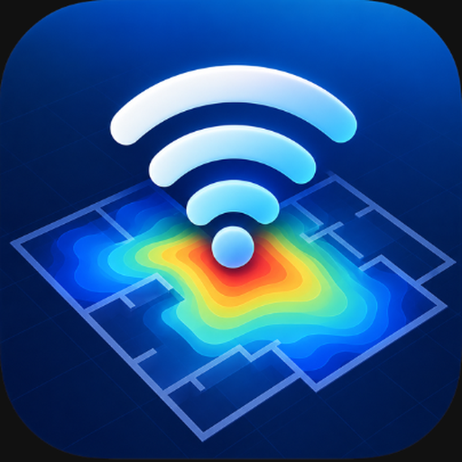

Release Notes
Spatial AI WiFi Heatmaps • Kizuna Software Solutions
Last updated: October 10, 2026
Version 1.2.0 — October 2026
- WiFi and cellular signal heatmaps with per-mode tabs in saved maps.
- Report generation and sharing from saved maps.
- AI assistant that answers questions about your measurements.
Version 1.0.0 — 2026
- First release: floor-plan import, ARCore motion tracking, photo markers and data export.
Questions or feedback? support@kizunasoftwaresolutions.com